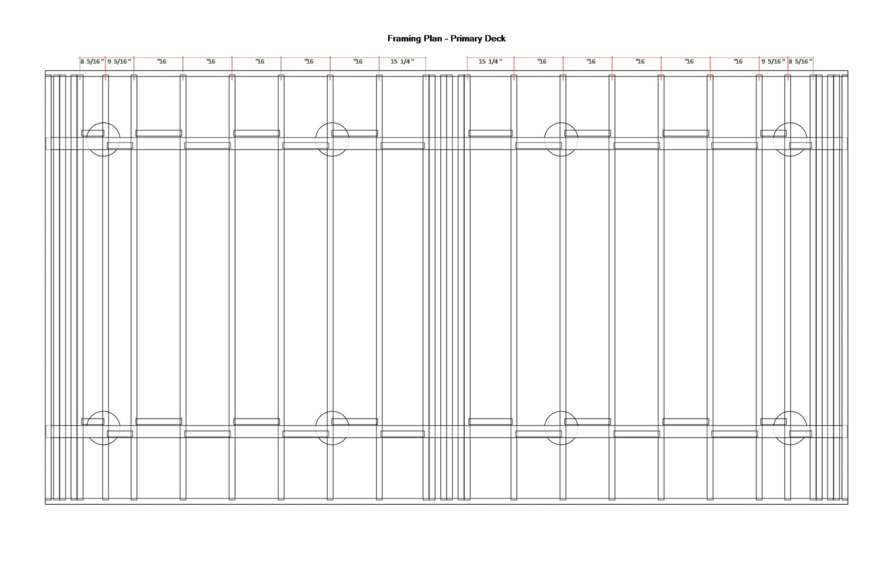
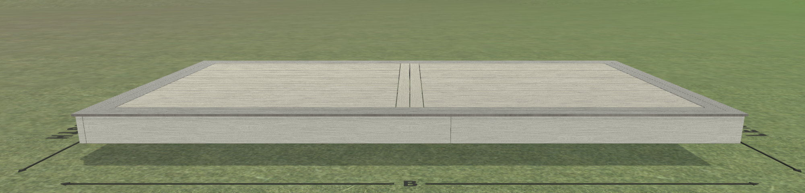

Pool Deck Build Guide
🏗️ Design: One Simple Rectangular Frame
This is a simple 22' × 12' floating platform built as one continuous frame that sits directly on flat stone or compacted gravel. No posts in the ground. No concrete footings. No ledger board. The entire structure rests on Eurotec ECO M/L pedestals, making it freestanding, low profile, and removable if needed.
Height: Main deck ~7" above grade · Sits well above coping
01Materials & Inventory
Everything on hand is reclaimed lumber. The only purchases needed are stain, extra decking boards, and additional pedestals.
02Design Overview
One continuous 22' × 12' freestanding frame. Simple. No center seam. No complicated blocking. Just a rectangle with a picture-frame border.
Structure at a Glance
- One frame: 22' wide × 12' deep · Continuous doubled 2×6 rims on all four sides
- Back rim: ~22' doubled 2×6 · Continuous across full width
- Front rim: ~22' doubled 2×6 · Continuous across full width
- Side rims: ~12' doubled 2×6 each · Left and right, front-to-back
- Field joists: 2×6 at 16" O.C., running front-to-back (perpendicular to back rim) · 11.5' length = zero joist cuts · ~17 joists across the 22' width
- Rim joists: Doubled 2×6 on all four sides · Back/front: ~22' · Sides: ~12'
- Mid-span blocking: One row of 2×6 blocking at ~5.75' from back edge · Prevents joist twist across the full 22' width
- Border: Single-row picture-frame on all four sides · 45° mitered corners · Border boards run perpendicular to the edge they border
- Decking direction: Field boards left→right (parallel to back/front rims, perpendicular to joists) · Two 12' boards butt-joined per row to span ~21' · Border boards perpendicular
Dimensions Summary
| Element | Dimension | Notes |
|---|---|---|
| Overall frame | 22' × 12' | One continuous substructure |
| Back/front rims | ~22' each | Doubled 2×6 · Continuous across full width |
| Side rims | ~12' each | Doubled 2×6 · Left and right edges |
| Field joists | 11' 6" | Full length, no cuts · Front-to-back at 16" O.C. |
| Inner field | ~20' 10" × ~10' 6" | After 5.5" border on each side |
| Border depth | 5.5" (1 row) | Single-row picture-frame on all sides |
| Total height | ~7" | 5.5" joist + ~1" decking + ~0.5" pedestal adjustment |
03Framing Detail
Joist Layout (One Continuous 22' × 12' Frame)

Reference: Trex design tool overhead view

- Outer rim joists: Doubled 2×6 perimeter band on all four sides · Back/front: ~22' continuous · Sides: ~12' each
- Field joists: 2×6 at 16" O.C., running front-to-back (perpendicular to 22' back rim) · Full 11.5' length — no cuts needed
- Joists sit DIRECTLY on pedestals/stone: No beam underneath · Pedestals contact joist bottom directly
- Ends: Joists are face-screwed to back/front rim joists with 3" exterior screws · 2 per end
- No ledger: The frame is self-contained · No connection to house
- ~17 field joists at 16" O.C. across the 22' width (plus doubled side rim joists on left/right)
Mid-Span Blocking
- One row of 2×6 blocking at ~5.75' from back edge · Prevents 11.5' joists from twisting
- One piece per bay between field joists · ~16 pieces total across the 22' width
- Cut from 2×6 offcuts · Face-screwed to joists
Support Pedestals
- ECO M (1.4"–2.6"): Primary pedestal for lowest profile · Use where grade is already level
- ECO L (2.6"–5.1"): Use where ground slopes or needs more lift · Adjustable by rotating threaded barrel
- Placement: Roughly 2–3 per joist under field joists · Additional pedestals under rim joists · ~55–65 total
- Base: Flat stone pavers (most stable) OR compacted gravel (cheaper) OR combo — flat stone at corners/peaks, gravel in between
04Stain & Finishing
Stain BEFORE you build. Every piece gets all six faces sealed on sawhorses before it goes in the truck.
Product
- BEHR PREMIUM #SC-125 Stonehedge — Solid Color Weatherproofing All-In-One Wood Stain
- 5-gallon bucket (covers ~1,000–1,500 sq ft for two coats)
- Color: Warm, earthy gray-brown that complements the wooded backyard
Application Method
- Prep: Pressure wash all boards, apply wood brightener, let dry 48+ hours. No heavy sanding needed — the rough-sawn texture is part of the look.
- Setup: Stack boards on flat sawhorses with ½" gaps for air circulation. Label every piece with its planned position using painter's tape and marker.
- End grain first: Brush a heavy coat on all cut ends — they drink stain. Let dry 30 min.
- Faces: Roll the broad surfaces with a ¼" nap roller for speed, then back-brush with a quality 3" brush to work stain into cracks and give that hand-finished look.
- Edges: Brush all four edges, especially where boards will butt together.
- Dry & flip: Let dry 4–6 hours, flip, repeat on the back face.
- Second coat (optional): After 24 hours, assess coverage. Solid stain usually needs one good coat, but high-traffic areas benefit from two thin coats vs one heavy one.
Team Roles for Staining
05Build Sequence
Build in phases: Prep → Frame → Block → Deck. Each phase needs dry weather.
Phase 1: Site Prep
- Clear site of debris, roots, and any vegetation within deck footprint (~23' × 12').
- Rough-grade the area with a rake and shovel. Goal: within ±1" of level across entire area.
- Mark out one 22' × 12' rectangle. Use string lines and spray paint.
- Spread 4–5 tons of crushed stone (¾" or smaller) OR place flat stone pavers at pedestal locations. Tamp well.
- Lay out pedestal locations with spray paint. Grid: 2–3 pedestals per joist, plus extras under rims.
- Install ECO M/L pedestals, adjusting height so tops are roughly level. Fine-tune during framing.
Phase 2: Frame the Deck
- Cut back/front rims: four ~22' 2×6s (or two 22' boards doubled each). These are continuous — no splice at center.
- Assemble outer rim on ground: rectangle 22' × 12' with doubled 2×6 on all sides. Check diagonal for square.
- Install field joists: 2×6 at 16" O.C., running front-to-back. Face-screw to back/front rims with 3" exterior screws or structural screws. Use 2 per end.
- Place assembled frame onto pedestals. Adjust pedestal heights so frame is level and at correct height (~7" total, leaving room for 1" decking).
- Add diagonal bracing inside the frame: Install 2×4 or 2×6 cross-bracing between field joists at corners to prevent racking. Screw through joists into brace ends.
Phase 3: Blocking
- Mid-span blocking: Install one row of 2×6 blocking at ~5.75' from back edge. One piece per bay between field joists across the full 22' width.
- Apply butyl joist tape to tops of all joists and rims before decking.
Phase 4: Decking — Inner Field
- Start at back edge. Lay 5/4×6 field boards left→right (parallel to back rim, perpendicular to joists). Each row uses two 12' boards butt-joined to span the ~21' inner field width. Stagger butt joints row-to-row. Work toward the front.
- Stop the field decking 5.5" from all edges — leave room for the single-row picture-frame border.
- Space boards ⅛"–3/16" apart for drainage. Screw with 2.5" exterior screws, two per joist.
- Verify field boards end cleanly at the border line. Trim if needed before installing borders.
Phase 5: Decking — Picture-Frame Border
- Install border boards on all four sides. Boards run perpendicular to the edge they border.
- Back/front borders: boards run front-to-back, butted against the field edge. Full ~12' length (or spliced).
- Side borders: boards run left→right (parallel to side rim, perpendicular to field boards). Full ~10' 6" length (cut from 12' stock) or butt-joined from two 12' boards if needed.
- 45° mitered corners: Where border boards meet at corners, cut both ends at 45° for a clean, finished joint.
- Pre-drill all border boards — short pieces split easily.
Phase 6: Railings & Step
- Rail posts: Surface-mount short 6×6 posts (~3' total length) at outer corners and mid-points. Pre-drill, attach with ½" lag screws and washers into blocking below.
- Rails: Two 2×6 horizontal rails, 36" above deck surface. Butt joints at posts.
- Box step: Wide box step on back/outer edge. Single 7" rise using 2×6 frame and 5/4 tread. Size: at least 3' wide for comfortable access.
06Railings & Safety
- Height: 36" above deck surface (standard residential)
- Posts: 6×6 nominal (actual 5.5" × 5.5") · Short pieces (~3' total) · Surface-mounted with lag screws into blocking
- Rails: 2×6 horizontal, two per bay · Top rail at 36", mid-rail at ~18" · Butt-joined at posts
- No gate: Continuous railing around outer perimeter — box step provides access
07Decking Notes
Picture-Frame Border
Reference: Trex design tool 3D perspective view

The picture-frame border is the signature detail of this deck. Here's how it works:
- Field boards run left→right (parallel to back rim, perpendicular to joists), covering the inner area
- Border boards run perpendicular to the edge they border · Back/front borders run front-to-back · Side borders run left→right (perpendicular to field boards)
- Single row: Each border zone is 5.5" deep (one 5/4×6 board at ~5.5" wide)
- 45° mitered corners: Where border boards meet at corners, cut both ends at 45° for a clean, crafted joint
- Visual effect: The perpendicular border creates a crisp frame around the field, like a picture frame
- Structural benefit: Perpendicular borders interlock with the field edge, reducing lateral movement and giving the deck edge more rigidity
Cut Strategy for 5/4×6
08Tools Needed
09Build Timeline
| Phase | Duration | Weather | Team |
|---|---|---|---|
| Site Prep + Stain | 2–3 days | Dry, 60–80°F | All hands |
| Framing (one 22'×12' frame) | 1–2 days | Dry, no wind | You + 1 helper |
| Blocking + Joist Tape | ½ day | Dry | You + helper |
| Decking (field + border) | 1–2 days | Dry | You + 1 helper |
| Railings + Step | ½ day | Any | You + helper |
| Total | 4–7 days | — | — |